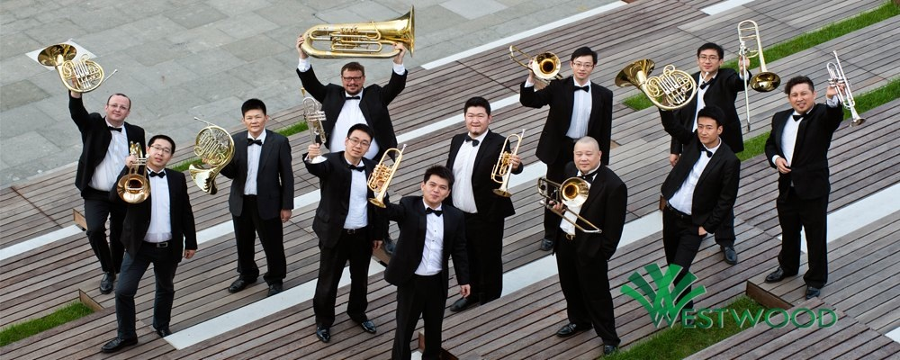

关于我们
我们有最先进的教学理念，最专业的中、外籍师资，最完善的管理模式，最周到的全方位服务。
我们有最先进的教学理念，最专业的中、外籍师资，最完善的管理模式，最周到的全方位服务。
中国首创以世界最先进的SKYPE网络视频教学模式与美国乐团的音乐家实时互动上课。 图为：美国芝加哥交响乐团小号演奏家John Hagstrom在上课。
我们的SKYPE专业教室同时可进行专业音乐录音、录像，为您制作考学专用CD及DVD.
我们以小课的形式开设纯外教音乐专业英语培训班，同时含雅思。
我们的音乐家将以全英文方式授课，让您在学习乐器演奏的同时，对音乐专业英语也同步进行学习，帮您平滑的考入外国学校。
我们还会为学员开设各种重奏课程，来丰富单一乐器学习不具备的合作意识。我们的重奏教室刚刚结束重奏排练。
我们为您的陪同人员准备了优雅舒适的休息区，及饮品。
我们的教室采用了专业的隔声门及声学装修，使您在上课时及练琴时与他人互不干扰。
这是一群酷爱音乐的音乐演奏家，实现梦想的天堂，这是一个世界零距离的音乐大师面对面。为了更完美的传达音乐，塑造更杰出的新一代青年音乐家，我们架起希望之桥，开启美国及世界音乐之门。致力于培养青年音乐家的教学及音乐传播展示工作。我们的目标是打造出一流的音乐人才，一个音乐无国界的交流平台，一个展示你音乐才华的舞台。